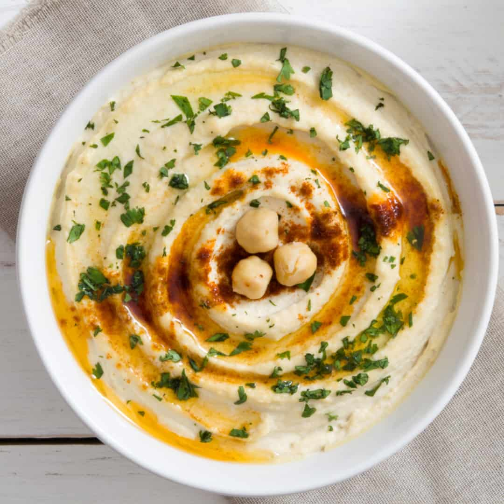

~Mediterranean Cuisine~
Hummus

Prep time:5 Minutes
Total: 5 Minutes
Total Servings: 4 servings
Per serving: 121 calories; protein 3.6g; carbohydrates 16.5g;
fat 4.7g; sodium 500.7mg
See
Inspiration
Ingredients:
1 (15 ounce) can garbanzo beans, drained, liquid reserved
1 tablespoon lemon juice
1 tablespoon olive oil
1 clove garlic, crushed
½ teaspoon ground cumin
½ teaspoon salt
2 drops sesame oil, or to taste (Optional)
Procedure:
- Step 1: Blend garbanzo beans, lemon juice, olive oil, garlic, cumin,
salt, and sesame oil in a food processor; stream reserved bean liquid into
the mixture as it blends until desired consistency is achieved.